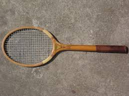
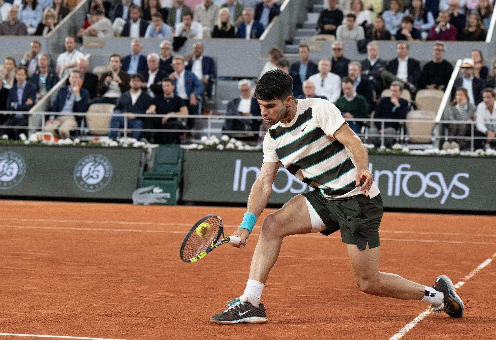

Current Exhibitions
Explore our rotating collection of exhibitions that celebrate the history, technology, and culture of tennis rackets.
Exhibition 1: The Wooden Era (1880s–1970s)

Step back in time and discover the handcrafted wooden rackets that defined the early decades of tennis. From the first laminated ash frames to the iconic Dunlop Maxply, this exhibition traces how materials, weight, and head size evolved before the modern era. Highlights include rackets used in early Wimbledon championships and rare frames from manufacturers that no longer exist.
Exhibition 2: Grand Slam Frames

See the actual rackets swung by the greatest players in tennis history. This exhibition features match-used frames from Roger Federer, Rafael Nadal, Serena Williams, Billie Jean King, and Pete Sampras. Each racket is displayed alongside match footage and stats from the tournament where it was used. Learn how each player's racket choice reflected their playing style and strategy.
Exhibition 3: The Science of Spin
How does string pattern affect topspin? What role does frame stiffness play in power? This interactive exhibition lets visitors experiment with different racket setups on a simulated court. Touch screens display real-time data on spin rate, ball speed, and launch angle. It is our most hands-on exhibit and a favorite among competitive players and curious visitors alike.
Exhibition 4: Rackets Around the World

Tennis is played in over 200 countries, and racket design varies by region, playing surface, and local manufacturing traditions. This exhibition showcases rackets from Japan, France, Australia, Argentina, and beyond, highlighting how geography and culture influence equipment design. From the clay courts of Roland Garros to the hard courts of Melbourne, see how the game adapts around the world.
Upcoming Exhibitions
| Exhibition | Opening Date | Description |
|---|---|---|
| String Theory | June 2026 | A deep dive into natural gut, synthetic, and polyester strings |
| The Grip | September 2026 | How overgrips, handle shapes, and grip size affect performance |
| Rackets of the Future | January 2027 | Prototype frames using graphene, AI-optimized designs, and smart sensors |